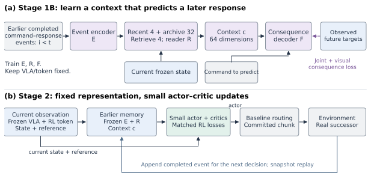
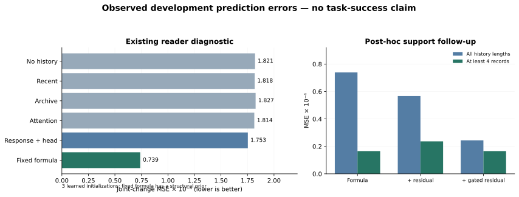

Lightweight reinforcement learning can adapt a frozen vision-language-action (VLA) model through a compact state representation and a small actor–critic. However, a representation of the current observation need not reveal how commands will be realized under the current execution conditions. We study whether completed command–response records can supply this missing information. We propose Interaction Memory for RL Token (IM-RLT), which preserves the frozen RLT representation and augments the controller with a bounded context of recent and retrieved interactions. A lightweight encoder and reader are trained to predict a later interaction’s consequences from strictly earlier records; their context then conditions the actor and critic. The initial online configuration freezes these modules to separate representation quality from additional optimization. A development study using paired simulated executions with different controller stiffnesses motivates this design: a fixed command–response estimator achieves a joint-response mean squared error of , compared with for the existing attention reader. This result identifies a gap in extracting useful experience, rather than a demonstrated control advantage. We specify matched-budget control comparisons, frozen-parameter memory interventions, condition-change tests, and source-memory transfer evaluations. These experiments distinguish learning through replay from adaptation through retained evidence and make improvements in success, convergence, and interaction cost independently testable.
Version 2 · 3 October 2026. Proposed method with measured development diagnostics; controlled online-RL and transfer results remain pending. The PDF is the reference layout; this HTML uses the same manuscript source and native MathML.
Pretrained vision-language-action models provide a useful behavioral starting point for robot manipulation, but adapting that behavior to a particular execution setting still requires experience. RL Token (RLT) compresses VLA features and learns a small controller around a frozen backbone, reducing the cost of online reinforcement learning [1]. This design makes the information supplied to the actor and critic especially consequential: the lightweight controller must choose corrections and estimate their value without adapting the entire VLA.
Current visual and proprioceptive observations do not necessarily determine the response to a command. Similar robot configurations can occur with different actuator responses, object friction, or contact constraints. A completed action can expose some of these differences: the same commanded motion may produce substantial displacement, little displacement, or a delayed response. Repeatedly relearning such differences through weight updates is potentially expensive. Retaining the corresponding interaction evidence could instead help the next decision, provided that the evidence is informative, relevant, and available at that decision time.
This possibility raises a narrower question than whether adding memory produces a self-improving robot: can a compact representation of completed interactions improve the sample efficiency of an otherwise unchanged RLT controller? Replay already allows reinforcement learning to improve parameters from successful and unsuccessful trials. Our additional hypothesis concerns the controller’s input. A memory-conditioned policy can change its behavior when its evidence changes, even with every network weight frozen. Such context adaptation is distinct from continued training, and transferring a memory bank is distinct from transferring pretrained weights.
Existing approaches clarify the gap. eRLT improves the extraction of action-relevant features from the current VLA input through token and layer routing [2]. Zeva studies learning from embodied interactions through an interaction representation and in-context use of experience [3]. Historical system identification and context-based RL establish the broader principle of adaptation from state–action evidence [4], [5], [6]. Consequently, the contribution sought here is not the generic introduction of a memory token or a claim to discover physical laws. It is a specific way to train and use an execution context within inexpensive VLA reinforcement learning, together with experiments that determine whether its additional machinery is justified.
Our development results make reliable extraction the immediate obstacle. On cached simulated command–response trajectories, the existing neural memory reader is only marginally different from a no-history predictor, whereas a simple response estimator is substantially more accurate. A subsequent support-gated residual improves overall prediction error but does not establish manipulation success. These observations favor a focused design: train history to explain a later response, retain the interpretable response estimator as a strong baseline, and measure control directly.
We therefore propose IM-RLT. Completed interactions are encoded into a bounded recent store and an archive. A reader combines records with the current state to produce a compact context. An auxiliary decoder supervises the context using observed future consequences during an offline interaction-pretraining stage. The first online experiment freezes the representation and trains the same small actor–critic used by the matched baseline. This choice tests whether the context contains useful information before introducing representation drift, adaptive retrieval, or changes to the action generator.
The manuscript makes three contributions at its present evidence level:
A formulation that distinguishes parameter learning, context adaptation, and experience transfer in frozen-VLA RL.
An interaction-memory design with consequence supervision, bounded storage, and explicit timing and replay semantics.
Development measurements that motivate the design, and a controlled evaluation protocol for testing its effects on success, sample efficiency, stale-memory interference, and transfer. Confirmatory control results are not yet available.
VLAs such as and learn broad visuomotor behavior from robot data [7], [8]. Downstream RL can refine these behaviors through different trainable interfaces. RLT constructs a compact representation for a lightweight controller [1]; DSRL instead steers a pretrained diffusion policy through its latent sampling space [9]. These interfaces change the action optimization problem and must not be treated as interchangeable baselines. ConRFT and human-in-the-loop RL also illustrate the importance of initialization, demonstration data, and corrective feedback [10], [11]. Our primary simulation protocol does not require live human correction, although shared demonstration data may initialize all methods.
eRLT is the closest representation-level comparison: it initializes routing through expert-action prediction and refines the representation using critic feedback [2]. This motivates an action-supervised, current-input comparison that tests whether better present-state features remove the need for memory. SmoothRL addresses online RL during asynchronous execution and accounts for how generated chunks participate in execution [12]. Our core experiment uses synchronous execution; it borrows the discipline of tracking executed commands but does not reproduce an asynchronous RL algorithm. Both distinctions are necessary for attributing an improvement to interaction context.
Zeva motivates extracting useful information from visual-action interactions and maintaining experience for later use [3]. MemoryVLA studies memory within a VLA architecture, while RoboMME evaluates memory-related capabilities of robotic policies [13], [14]. Our context is an external input to a small RLT actor–critic, and our primary training signal concerns a later execution outcome. A matched interaction-encoder baseline is needed before attributing gains specifically to this supervision.
History-based adaptation predates VLA memory. UP-OSI estimates execution conditions from online evidence; RMA learns an adaptation module from recent state–action history [4], [5]. PEARL, VariBAD, and RL study adaptation through context or recurrent state [6], [15], [16]. These methods preclude novelty claims for conditioning a policy on interaction history alone. They motivate strong recent-history controls and a separate test of whether retrieving older records adds value beyond a recurrent estimator. A latent that predicts observed response also need not identify a unique physical parameter: actuator lag, contact, and commanded magnitude can produce similar effects.
Predicting future representations can improve the information retained by a learned state [17]. FLARE connects robot policy learning with implicit world modeling [18]; we draw on future-feature supervision rather than reproduce its complete joint architecture. Imagine-RL uses world-model information for VLA value learning [19]. IM-RLT initially predicts consequences only to train a context representation: its actor does not roll out candidate futures or invoke a planner. This separates it from predictive value augmentation and model-based planning such as TD-MPC2 [20]. Failure trajectories supply informative responses as well as low returns, but their use does not make them successful imitation targets. Hindsight goal relabeling is a separate mechanism [21] and is not required here.
| Approach | Relevant information or intervention | Comparison required for IM-RLT |
|---|---|---|
| RLT / eRLT | Compact current features / action-relevant routing | Preserve action interface; strengthen current features |
| SmoothRL | Execution-aware asynchronous RL | Keep execution schedule fixed in the core study |
| Zeva / MemoryVLA | Interaction or perceptual history | Match evidence, reader capacity, and source data |
| RMA / PEARL | Recent response or inferred context | Include a strong history-conditioned controller |
| FLARE / Imagine-RL | Future-feature learning / predictive value information | Test consequence supervision without an archive |
| IM-RLT (proposed) | Earlier interactions predicting later responses | Establish control and frozen-weight memory effects |
At decision index , the robot observes images , transformed proprioception , and instruction . A frozen VLA and its fixed Stage 1 representation provide an RL token and a reference action chunk . Let denote the baseline state. A small actor proposes an action, and the baseline routing rule combines or selects it with the reference to obtain a committed command chunk . The action representation, routing rule, action limits, reward, and update schedule are held fixed across comparisons. A noise-space controller and a joint-command controller therefore define separate experimental tracks.
The simulator executes up to low-level commands before the next decision. Let be the actual duration and the valid executed prefix. The real successor is observed before any reset. For normal synchronous execution ; an episode termination can shorten the prefix. Decision index must not be confused with one low-level control tick. Raw joint positions , when available, are recorded separately from : VLA input transformations need not preserve physical units.
We model the environment as partially observed, with a physical state and execution condition . Its transition distribution depends on the committed action and condition, . The condition can be stationary within an episode or change at a specified evaluation boundary. The deployed controller does not receive . Current observations may constrain it, and past responses may provide additional evidence; neither source is assumed sufficient in advance.
Define the completed-event history . A bounded memory operator selects , and a reader produces . The objective is to improve expected task return at a fixed interaction and optimization budget by conditioning the baseline controller on . We operationalize this objective through success-rate learning curves and cost, not representation loss alone. The representation is useful only if its information changes decisions or value estimates in a way that improves those outcomes.
Parameter learning updates weights through replay. Context adaptation changes as observations accumulate with weights fixed. Experience transfer introduces a source memory into a different, explicitly held-out target setting. The first is already part of RLT. The second requires a retain-versus-clear memory experiment with identical weights; the third additionally requires controls for transferred weights, source-data cost, and memory compatibility. Evidence for one does not imply either of the others. In this manuscript, “physical interaction information” means command-conditioned response evidence, not an identified universal law of mechanics.
An existing development probe predicts ten-step joint displacement from the current state, command, and optional history. An attention reader yields an MSE of , while a fixed response estimator yields on the same held-out development groups (Section 5.2). Thus, adding storage and attention did not by itself extract the useful response information. This motivates training the memory representation for a measurable future use, while preserving the fixed estimator as a control rather than replacing it by a larger network without evidence.
Figure 1 summarizes the proposed three-stage procedure. Stage 1 retains the baseline VLA/token training. Stage 1B learns an interaction encoder and reader from completed trajectories. Stage 2 supplies their context to the small controller while freezing both the VLA representation and, initially, the new context modules. At evaluation, the same weights can be tested with retained, cleared, or mismatched evidence.

For a completed decision , define
No outcome from decision is available to the context used to choose . Previous terminal events are usable only under an explicitly declared cross-attempt retention protocol and with a real terminal observation. A reset image is not a terminal consequence. Invalid or padded entries are replaced by neutral finite values before normalization, MLPs, or attention; multiplying a final loss by zero cannot remove NaNs created earlier. An empty memory returns exactly zero context, allowing a defined baseline behavior.
The event does not assert that a collision occurred merely because displacement was small. Direct contact supervision, if later enabled, must come from a specified sensor or simulator label. Such labels constitute privileged training information when unavailable at deployment and require a separate comparison. The core method needs no contact label.
The initial design keeps the four most recent completed events in order and at most 32 older events in an archive. The oldest recent event moves into the archive, and FIFO eviction bounds its size. The current query retrieves up to four archive records; recent records are excluded from this retrieval to prevent duplication. Record age and the recent/archive distinction are supplied to the reader. These capacities match the scale of the existing implementation and are starting hyperparameters, not validated optima.
For the first implementation, archive retrieval uses a fixed similarity over pre-event visual and proprioceptive inputs:
By default, stores are episode-local. A separately configured evaluation retains the archive across attempts on the same instance. Transfer uses a frozen, provenance-labeled source bank and a distinct target bank; it does not silently pool evaluation trajectories from unrelated instances. Keys are not proof of physical compatibility: visually similar observations can have incompatible responses. That failure is evaluated explicitly.
Stage 1B samples a decision and constructs its context using only indices . A decoder receives the current state, the commanded fixed-horizon action prefix, and the earlier context:
With a normalized detached target from the frozen encoder, we use
The loss does not guarantee history use: the decoder may solve the task from and alone. We therefore compare no-history and shuffled-history variants, and separately remove historical commands and the target command. Predicting the next expert action provides an action-supervised alternative. A direct future-feature head is the default; a residual head is an explicit ablation because the existing FLARE-inspired development line did not consistently favor residual prediction. These tests address whether consequence supervision adds information, rather than assuming that a low auxiliary loss establishes the mechanism.
The primary Stage 2 configuration freezes and after Stage 1B. The actor reads , and the critic reads . If raw is additionally exposed to a module, the capacity-matched baseline receives the same current observation. The proposal adds no new online optimizer or action planner. For a TD3-style baseline [22], the schematic critic target is
Equation 6 conditions on the committed behavior chunk, which is the decision’s action variable. Equation 1 records only its executed prefix. In synchronous execution with early termination, a post-outcome duration must not become an extra critic observation unavailable at action selection. Asynchronous replacement or cancellation requires a separately specified action-value contract and is outside the primary experiment. This distinction avoids conflating execution bookkeeping with a change to the RL algorithm.
The small actor retains the baseline objective, schematically
Replay owns immutable snapshots of the evidence visible at the current and successor decisions. Reading an old transition against today’s archive would reveal interactions from its future. The current event is appended only after its true successor arrives; it may inform but cannot inform . Terminal and reset contexts are constructed separately. Partial resets clear only the relevant environment lane, and checkpoint restoration must restore the declared memory state or explicitly begin with empty stores.
Algorithm 1 gives the primary synchronous loop. Because the representation is frozen, storing context vectors is sufficient for exact replay of the primary method; retaining raw snapshot references additionally permits audits and later re-encoding. An online-updated encoder is a secondary variant that requires re-encoding snapshots, versioning keys, and a single declared optimizer owner. The current development branch instead trains its reader through the critic; these are different configurations.
Algorithm 1. IM-RLT online learning with a fixed context representation (proposed) Input: Fixed VLA/token encoder; pretrained ; actor , critics ; replay
Initialize per-environment stores according to the declared reset protocol
For each interaction decision
Observe ; snapshot permitted earlier evidence ; compute
Produce reference and actor actions; commit through the baseline routing rule
Execute commands; record valid prefix, rewards, and true pre-reset successor
Form from observed consequences; update stores; compute successor context
Add an owned transition and current/successor evidence snapshots to
Update using the matched baseline schedule and Equations 5–7
If the episode has ended
Reset environment; clear or retain permitted records; compute a separate reset context
At frozen-parameter evaluation, skip all gradient updates and vary only the memory protocol
A robustness extension may reduce or clear older evidence after sustained consequence-prediction error. Its threshold must satisfy a stationary false-alarm constraint on validation streams. An excitation-support statistic is not calibrated confidence: many old observations can be consistently wrong after a change. Feedback is tagged with the prediction’s memory generation so that delayed pre-reset errors cannot repeatedly clear a new bank. We treat this extension as a separate comparison against simple clearing and fixed recency weighting, not a prerequisite for the core method.
We first report completed development diagnostics and their limitations, then specify the experiments required to evaluate IM-RLT. No entry below presents planned control performance as a measurement. This separation is especially important because the development split has already influenced method selection.
The response probe uses ManiSkill simulation [24] with two hidden controller stiffness settings, 250 and 1000. There are 112 trajectories arranged as 56 command-paired groups: each pair executes the same command sequence under the two settings. Each trajectory contains 120 control ticks. Splitting by paired group gives 32/8/16 training/validation/test groups and 768/192/384 ten-step windows. Both stiffness settings occur in every split. This tests held-out command trajectories within known conditions; it is not an unseen-dynamics test.
The prediction target is the nine-dimensional change in raw joint positions over a window. Arm joint angles and finger positions have different physical units, so the aggregate MSE is a code-level diagnostic rather than a force or energy error. The initial learned probes use three initialization seeds, 1000 updates per fit, and validation-based checkpoint selection. All variants are evaluated on the same cached test windows. This dataset does not independently manipulate friction or contact and cannot establish identification of those quantities.
Table 2 reports the initial diagnostic. Recent, archive-only, and combined attention readers have nearly the same error as the no-history predictor. Feeding explicit response statistics to a learned prediction head gives a modest improvement. The parameter-free response formula is more accurate than every initial neural variant, reducing mean error by 59.3% relative to full attention on this fixed development test. The comparison motivates stronger extraction objectives; it does not establish that attention is generally inferior or that memory improves control.
| Existing diagnostic predictor | Joint-response MSE |
|---|---|
| No history | |
| Recent history | |
| Archive only | |
| Recent + archive attention | |
| Response statistics + learned head | |
| Fixed command–response formula |

A post-hoc follow-up fits residual predictors using six initialization seeds (Table 3). The ungated residual improves overall error while increasing late-history error. Suppressing residual corrections when the fixed estimator has high excitation support lowers overall error and keeps late-history error close to the formula. This supports a narrower interpretation: the fallback is useful when history is limited, while unconstrained learning can damage an already informative estimate. It does not validate support as uncertainty, nor distinguish all possible causes of error. The same development data informed this follow-up, so a new locked condition split is required for confirmatory claims.
| Predictor | Overall MSE | Late-history MSE |
|---|---|---|
| Fixed formula | 0.7389 | 0.1657 |
| Formula + learned residual | 0.5671 | 0.2369 |
| Formula + support-gated residual | 0.2442 | 0.1659 |
Existing online runs do not close the control question. A memory run reached 516 outer iterations under a 12-hour limit and used four fixed evaluation trajectories. Its best observed checkpoint succeeded on two, while later checkpoints succeeded on one. The run used always-on control, lacked a matched no-memory long run, and did not implement the proposed Stage 1B representation. These repeated four-trajectory evaluations cannot be interpreted as independent evidence for a stable success rate or improvement. A historical Stage 1 reference result of 8/20 episodes is likewise a baseline development observation. No controlled success or transfer result for IM-RLT is presently available.
The first campaign should establish one reliable no-memory implementation before testing representation changes. ManiSkill offers continuity with the existing response diagnostics; LIBERO offers a complementary manipulation setting [25]. The chosen code revision, pretrained VLA, action parameterization, and task must be fixed after baseline acceptance. Moving to a repository with a different backbone or action interface creates a new track, not a replication of the same baseline. A successful released checkpoint is useful for checking evaluation, but is not evidence that local Stage 1 and Stage 2 training are reproduced.
The small experiment begins with one task, three seeds, and four configurations: capacity-matched no memory, a recent-history reader, the existing archive reader, and the fixed response context. This establishes whether execution evidence can help the selected controller at all. The consequence-trained method is then introduced with the same initialization and source pool. Only a positive, reproducible control signal justifies expansion to multiple tasks and five training seeds per method. Live VR correction is not required: all arms use the same fixed demonstrations and autonomous online reward. Any scripted expert or later human assistance is an explicitly budgeted extra source, not an unreported rescue mechanism.
The main test varies response conditions without revealing their labels to the deployed policy. Controller stiffness or gain provides a first intervention; separately validated friction, payload, or latency changes can follow. Training, validation, and test groups separate full trajectories and initial-state groups. A second split holds out condition values, and a third combines held-out conditions with objects or tasks. Merely sampling new windows from the original two stiffness settings is not this test. Conditions are selected for measurably different responses and feasible task execution; impossible settings would confound adaptation with solvability.
| Configuration | Context or supervision | Question |
|---|---|---|
| Original RLT | Original inputs and capacity | Is the baseline reproduced? |
| Capacity-matched RLT | Zero context; matched input width | Does extra capacity explain a gain? |
| Recent-history encoder | Ordered visual/proprioceptive/action history | Is a short history sufficient? |
| Existing archive reader | Current TD-trained memory module | Does the new representation improve existing memory? |
| Fixed response context | Command–response slopes and support | Is learned extraction necessary? |
| IM-RLT | Stage 1B consequences; fixed online encoder | Does later-outcome supervision help control? |
| Action-supervised readout | eRLT-style current-input initialization | Would stronger current features suffice? |
| Prediction without memory | Same target; no historical context | Is the gain due only to auxiliary supervision? |
| Interaction encoder (adapted) | Zeva-style event representation; same controller | Does the future-use objective add value? |
Table 5 defines interventions that can reject the proposed explanation. Removing commands from historical records and removing the target command are separate tests: the latter can dominate a prediction loss even if the history reader ignores commands. Shuffling is performed within matched task, time, and record-count strata; both train-and-test ablations and test-time interventions are reported because the latter may introduce distribution shift. Archive size, context width, and decoder capacity are matched where the comparison permits it.
| Intervention | Interpretation if control is unchanged |
|---|---|
| Remove historical commands; separately remove target commands | Action-related response information may not explain the effect |
| Shuffle matched history or replace it with empty history | The controller may ignore relevant event correspondence |
| Recent only versus recent + archive | The longer-lived archive may be unnecessary |
| Joint-only versus visual + joint events | Visual interaction context may add no benefit |
| No pretraining / expert-action / consequence pretraining | The supervisory target may not be the useful factor |
| Actor-only / critic-only / both context inputs | Locates whether action selection or value learning uses context |
| Frozen versus TD-updated context encoder | Tests the stability–adaptability tradeoff |
| Fixed versus learned retrieval | Retrieval complexity may not be justified |
For frozen-parameter adaptation, each trained checkpoint is evaluated on matched sequences of repeated attempts. One arm retains the permitted memory, one clears it, and one receives mismatched evidence with the same size. No optimizer update or normalization refit occurs. Attempt-indexed success is the primary outcome. Cumulative success after several attempts is secondary because it increases even for a non-adapting policy. Arms share initial states and disturbances where feasible; their subsequent actions may diverge, which is part of the memory intervention. A complementary offline test feeds identical recorded histories to each reader to isolate extraction quality without policy-induced data differences.
For changed conditions, evaluate an announced reset protocol and an unannounced physical change as separate settings. Compare persistent memory, clearing, recent-only context, fixed age decay, and the validated error-triggered extension. Record the temporary loss in success, attempts to recover, and false resets in stationary episodes. A rich archive may create negative transfer precisely when its response statistics are well supported but obsolete.
For transfer, freeze source weights and source memory before target evaluation. Compare empty target memory, a compatible source bank, a mismatched bank, and transferred weights without the bank. Record source collection and pretraining costs. Source and target must share a defined observation/action schema; cross-robot transfer is not implied by transferring within one robot’s coordinates. Begin with held-out conditions on one task, then evaluate related tasks. If only pretrained weights help, the result is representation transfer rather than memory transfer.
The primary control measure is normalized area under the success-rate curve against valid executed control ticks. We also report final unassisted success, successful episodes per wall-clock hour, and ticks to a prespecified success threshold. A run that never reaches the threshold remains censored; it is not assigned an artificial favorable time. Action inference, memory retrieval, environment stepping, learner updates, and source pretraining are timed separately. Offline interactions and GPU-hours are included alongside online-only efficiency so that additional source data cannot masquerade as a free sample-efficiency gain.
All methods share initial pretrained checkpoints, demonstration counts, replay warmup, update-to-data ratios, evaluation frequency, and tuning budgets. The learned context and fixed-response baseline both receive the same current raw joint state when required. Five training seeds and at least 50 matched evaluation initial states per task–condition cell are the initial confirmatory target; the precise budget is fixed after the small pilot and before opening the locked test. Training seeds and task/condition groups, not overlapping windows, define statistical units. We report paired differences with cluster-aware bootstrap intervals and distributions rather than only best checkpoints, following established RL evaluation concerns [26]. Task-level results accompany aggregate summaries.
| Method | Success AUC | Final success | Ticks to target | Successes/hour |
|---|---|---|---|---|
| Capacity-matched RLT | Pending | Pending | Pending | Pending |
| Recent-history encoder | Pending | Pending | Pending | Pending |
| Existing archive reader | Pending | Pending | Pending | Pending |
| Fixed response context | Pending | Pending | Pending | Pending |
| IM-RLT | Pending | Pending | Pending | Pending |
The measured evidence supports the existence of useful command–response information in a particular simulator cache and shows that the current learned reader does not extract it as effectively as a simple estimator. It does not support faster RL convergence, higher success, lower intervention time, or transferable physical knowledge. The support-gated follow-up suggests that a learned correction should be tested against an informative fixed component, but its post-hoc selection weakens any confirmatory interpretation.
The decisive outcome is a control advantage at matched total cost, followed by a frozen-weight retain-versus-clear effect. If consequence prediction improves without control improvement, the representation objective is misaligned with the intended task benefit. If recent history matches the archive, the method should be simplified. If a stronger current-input baseline removes the gain, the evidence favors feature extraction over persistent interaction memory. These alternatives determine the scope of the eventual paper rather than being omitted as unsuccessful ablations.
We proposed an interaction-memory extension to frozen-VLA reinforcement learning that learns from completed commands and their observed consequences. Its central design is to train earlier evidence for a later predictive use, then test that evidence as a condition for an otherwise matched RLT actor–critic. Existing response probes motivate this design by exposing a gap between informative history and effective neural extraction. They do not yet establish the proposed method’s control value.
The current evidence is limited to small development diagnostics, two known controller settings, and unmatched online pilots. Learned interaction latents are not uniquely identified physical parameters; archival evidence can be irrelevant or stale; pretraining and retrieval can erase an apparent efficiency gain. Real-robot success and reduced human intervention remain future evaluations. The next step is a stable simulation baseline and a small matched control study, followed by frozen-parameter adaptation and locked transfer tests. Only those results can justify stronger claims about persistent improvement from accumulated experience.
This appendix separates the existing development implementation from the proposed method so that the manuscript can be translated into code without assuming unimplemented components. The public evidence manifest records the checked revisions and hashes of underlying private artifacts. These hashes establish provenance, not public access to raw trajectories.
| Component | Existing development branch | Proposed primary experiment |
|---|---|---|
| Stage 2 VLA/token | Frozen | Preserve the baseline |
| Event record | Raw joint state, commands, response, masks | Add frozen visual endpoints and transformed proprioception |
| Memory capacities | 4 recent; 32 archive; 4 retrieved | Same initial capacities; exclude duplicate records |
| Reader | Attention or response-statistic variants | Consequence-trained 64-dimensional context |
| Reader optimization | Critic-owned update; actor reads detached context | Stage 1B pretraining, then freeze for the first control test |
| Replay context | Existing history plumbing | Audit immutable current/successor snapshots end to end |
| Cross-attempt reuse | Optional retention logic | Matched frozen-weight retain/clear evaluation |
| Cross-task source bank | Not implemented | Separate source and target stores |
| Contact supervision | Not in the default event | Optional privileged-label ablation |
| Action-expert context | Not implemented | Deferred extension with a deployable feature rule |
The existing record has 110 scalars: nine initial joint positions, ten eight-dimensional commands, nine joint displacements, ten tick-validity entries, and two end flags. Its attention encoder maps records through a 64-dimensional MLP with LayerNorm and SiLU, reads them with a query derived from the current nine joint positions, and returns a 64-dimensional context. It does not already implement the visual interaction encoding of Equation 1. A reader receiving critic gradients is also not equivalent to the frozen consequence-trained reader in the proposed primary configuration.
The initial proposed encoder projects visual endpoints and normalized numerical fields separately before a small fusion MLP. Action sequences use a tick-masked temporal encoder; padded values are sanitized first. One 64-dimensional attention block reads the selected events, with age and store-type embeddings. This is an implementable starting specification; head count, normalization weights, and retrieval coefficient are selected on validation data within the same tuning budget as learned-history controls. No performance claim depends on an unselected hyperparameter.
The development formula estimates each arm joint’s observed response per aggregate command. For historical event and arm joint , the code constructs
The post-hoc predictor adds a zero-initialized learned residual. Its support-gated version uses
Stage 1 follows the accepted baseline’s own representation and action training. Stage 1B additionally requires trajectory order and valid successors. Independent observation–action examples cannot be converted into consequence targets by pairing unrelated rows. Where source demonstrations lack reliable successor or execution metadata, either recover the original aligned trajectories or exclude them from the corresponding auxiliary objective. Failures collected for context pretraining are counted in source interaction cost for every comparison.
The baseline action expert is an optional source of richer features, but its training-time hidden states may depend on noisy ground-truth actions and flow time. An extension must define an inference-time extraction rule, such as a fixed noise convention and denoising point applied to the reference proposal, then measure its latency and distribution mismatch. We defer this second intervention until the history context has shown a control effect. Joint Stage 1 training could later combine token reconstruction, expert-action loss, and consequence loss, with identical valid successor requirements.
The no-memory baseline must pass action normalization and routing checks, use a reproducible evaluation initialization set, restore model and optimizer state, and show actual actor/critic updates. Reference-only and actor-enabled evaluation are both required: an apparently successful RL run can still be following the reference throughout. Check reward accumulation, discount units, replay sampling, target-network updates, and the distinction between termination and truncation before varying the representation.
An integration smoke test verifies the loop, not learning quality. A one-seed pilot then checks that the chosen task supplies non-degenerate rewards and that the actor can improve or at least reproduce the accepted reference under a declared budget. Three independent runs establish baseline variability before a larger campaign. If this gate fails, memory comparisons cannot resolve whether an apparent effect comes from representation, optimizer behavior, or an unstable execution pipeline.
Useful regression tests exercise the following observable contracts: a record appears only after completion; the current action’s successor is absent from its current context; replaying an old transition after new collection returns identical primary-method contexts; partial resets do not affect other lanes; terminal observations are distinct from reset observations; and invalid NaN-padded records cannot alter a valid result. Empty memory must produce the same zero context after checkpoint restoration as at initialization. These tests protect causal timing and numerical behavior rather than a particular private tensor layout.
For the optional online encoder variant, raw snapshot records are re-encoded under the declared current or target encoder, and cached embeddings carry a version. Optimizer ownership is explicit: the same parameter cannot be updated independently by both actor and critic optimizers. The baseline target-network convention must extend consistently to any trainable context pathway used in value targets.
For each fixed-parameter run, log a checksum of model weights before and after evaluation, the reset/retention policy, attempt identifier, condition identifier used only for analysis, selected record provenance, and retrieval latency. Report attempt-wise success and elapsed interaction cost for every arm. A target bank grows only from its own completed interactions. A source bank is frozen before target evaluation, and its provenance cannot include held-out target outcomes. Related-object, new-condition, and new-task transfer are separate claims.
Two available GPUs can support paired runs of baseline and one candidate without changing the experiment definition. Hardware assignment is rotated or recorded to expose throughput asymmetries. A stopped or failed run is retained in the accounting, and additional tuning consumes the same declared budget across methods. Human corrections, if introduced in a later real-robot study, are reported as control seconds and intervention events alongside success, not merely as an unspecified number of demonstrations.
This manuscript was checked against the development state on October
3, 2026. The local code revision was f2d1cf64; the separate
diagnostic revision was abb43823. The recorded upstream
RLinf main revision was c70606f08cdc. Upstream status does
not certify the local experiment, and upstream changes are evaluated
separately rather than merged into an ongoing comparison. The public
companion bundle contains the evidence manifest, bibliography,
experiment matrix, vector figures, and editable manuscript source at
The source hashes refer to private experiment artifacts whose infrastructure paths have been removed. Public aggregate measurements allow the tables and diagnostic figure to be reconstructed, but do not provide full raw-data reproducibility. The 594 recorded synthetic method–condition–seed evaluations across older and newer diagnostics reuse paired random streams; the latest guarded subset has 324 records. They are neither independent robot trials nor measurements of manipulation success and are not pooled with the physical-simulation response table.
Version 2 follows the single-column research-paper organization exemplified by the arXiv versions of eRLT and SmoothRL: a compact abstract and introduction, related work, formulation, method, experiments, conclusion, references, and implementation appendices. This is an independently typeset working manuscript, not an arXiv posting or a conference-formatted submission. The earlier research-plan bundle remains archived. The substantive changes include formal execution semantics, explicit algorithm and loss definitions, separation of measured diagnostics from pending control results, and a reproducible LaTeX build.
Version 2, October 3, 2026. The interaction-memory method is a proposal. Reported measurements are development diagnostics of existing components; controlled online-RL and transfer evaluations are pending. Author information will be added before submission.↩︎